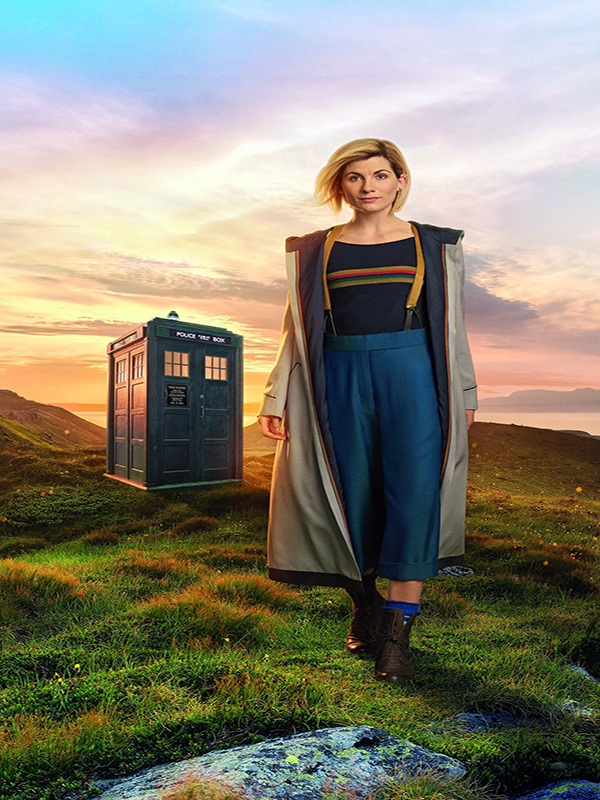

Christopher Ecclestone is the 9th doctor, replacing McGann after he died.
Christopher Ecclestone was the first doctor to be introduced since the series was revived in 2005. His partner was Rose Tyler and they were great friends.
Ecclestone died when Rose became Bad Wolf. Because she was human, she could not handle the power of Bad Wolf so Ecclestone sucked the power out of her, causing too damage to him.
Click Here to return to the Home Page